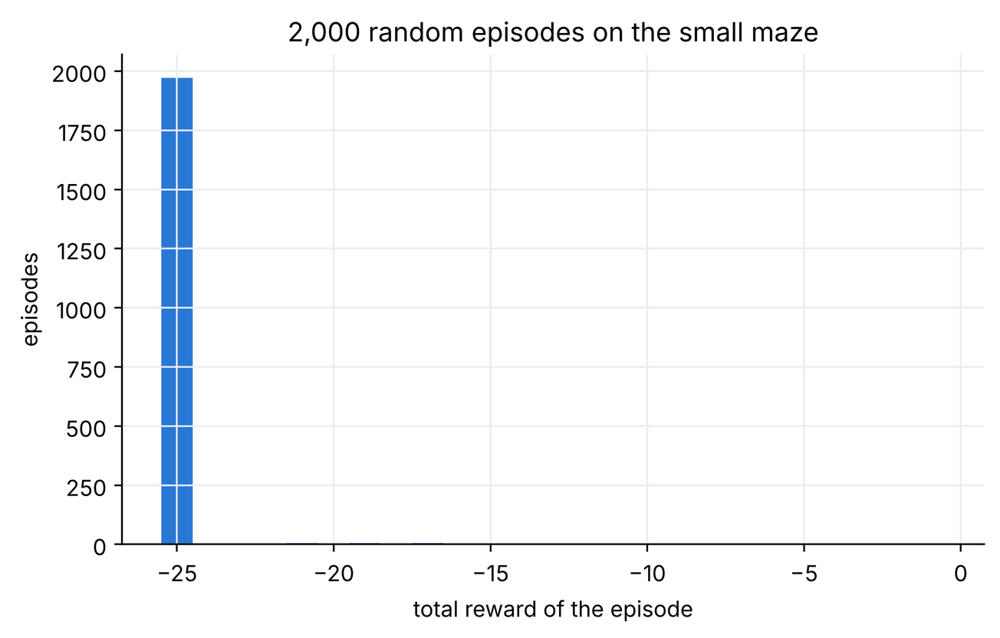
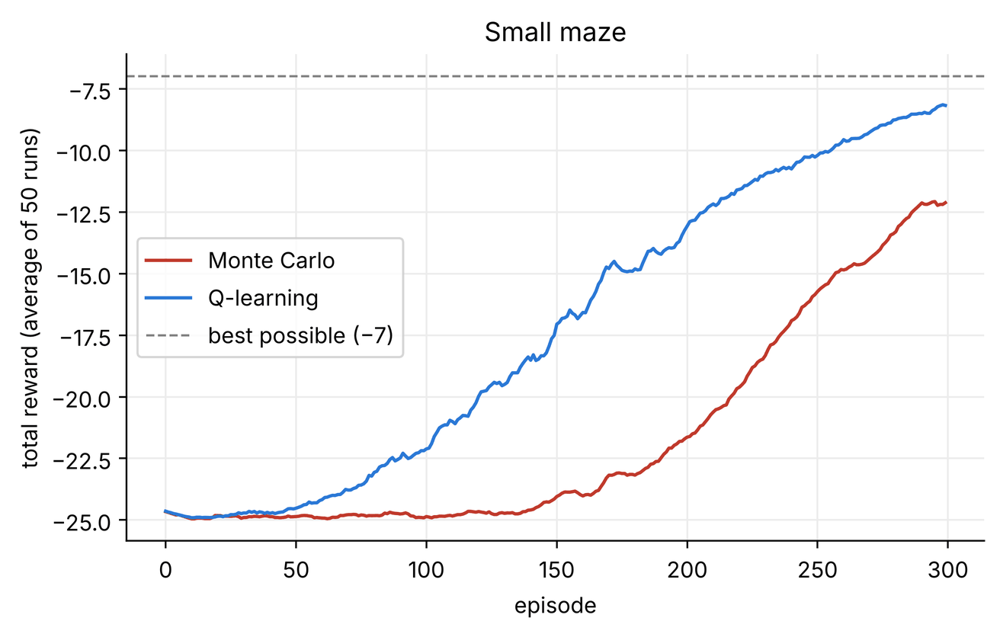
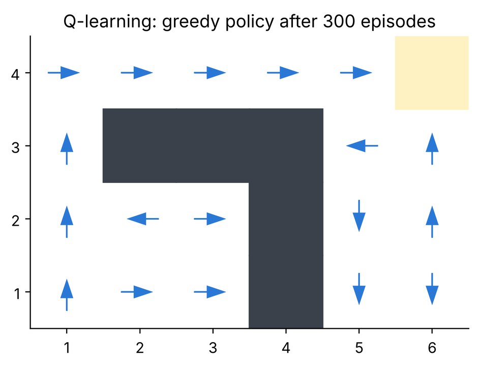
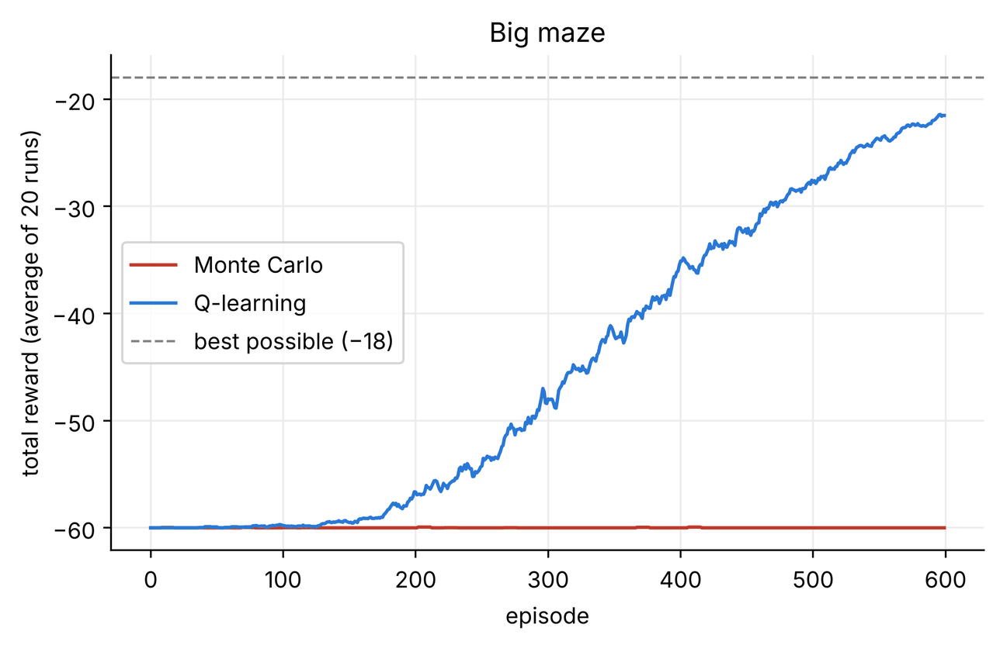
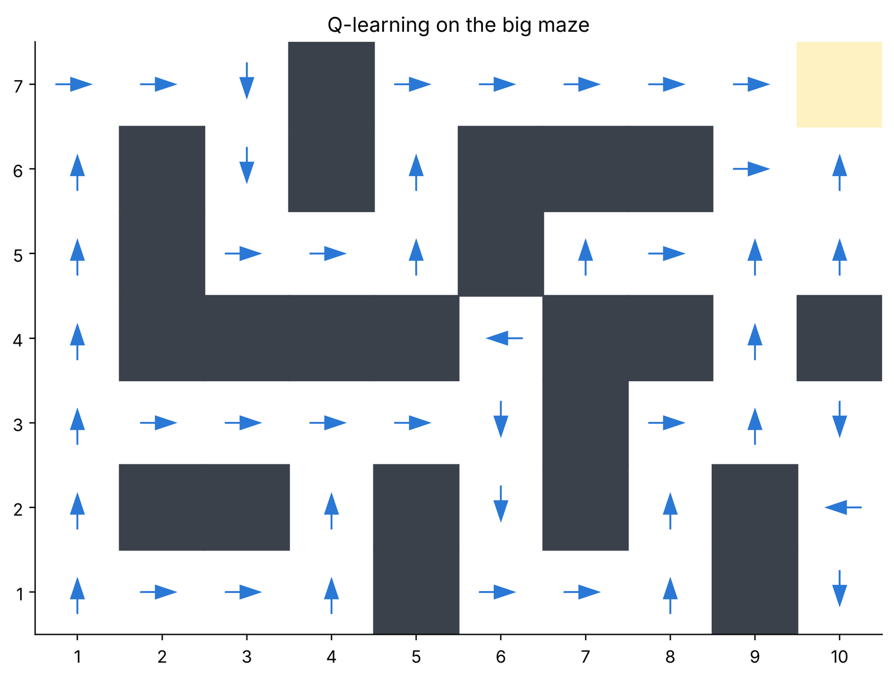

Practice · Q-learning in Python
The maze and Q-learning, line by line.
A complete, runnable notebook that builds a small maze as an environment, samples random episodes, computes returns, and learns a Q-table with Monte Carlo and with Q-learning. Then both methods are compared on the big maze. Only NumPy and Matplotlib are needed. Hover over (or tap) any line of code to see what it does.
1 Hover over or tap any numbered line of code to highlight its explanation. Every output and chart below was produced by running this exact notebook.
1Import the libraries
NumPy for arrays and random numbers, Matplotlib for charts. Nothing else: every algorithm is written out by hand.
- %config InlineBackend.figure_format = "retina"1
- import numpy as np2
- import matplotlib.pyplot as plt3
-
- plt.rcParams["figure.figsize"] = (7, 4)4
- plt.rcParams["axes.spines.top"] = False5
- plt.rcParams["axes.spines.right"] = False5
- plt.rcParams["axes.grid"] = True6
- plt.rcParams["grid.color"] = "#ececec"6
2The maze as an environment
An environment only needs two functions. reset() starts an episode and returns the first state. step(action) applies an action and returns the next state, the reward, and whether the episode is over. The agent will see nothing else.
States are (column, row) with row 1 at the bottom. Actions: 0 up, 1 down, 2 left, 3 right.
- class Maze:1
- MOVES = {0: (0, 1), 1: (0, -1), 2: (-1, 0), 3: (1, 0)}2
-
- def __init__(self, width, height, walls, start, target, max_steps):3
- self.width, self.height = width, height3
- self.walls, self.start, self.target = set(walls), start, target3
- self.max_steps = max_steps4
-
- def reset(self):5
- self.state, self.t = self.start, 05
- return self.state5
-
- def step(self, action):6
- dc, dr = self.MOVES[action]7
- nxt = (self.state[0] + dc, self.state[1] + dr)8
- inside = 1 <= nxt[0] <= self.width and 1 <= nxt[1] <= self.height9
- if inside and nxt not in self.walls:10
- self.state = nxt10
- self.t += 111
- reached = self.state == self.target12
- reward = 0.0 if reached else -1.013
- done = reached or self.t >= self.max_steps14
- return self.state, reward, done15
-
- small = Maze(6, 4, walls=[(2, 3), (3, 3), (4, 3), (4, 2), (4, 1)], start=(1, 1), target=(6, 4), max_steps=25)16
- big = Maze(10, 7, walls=[(2, 2), (2, 4), (2, 5), (2, 6), (3, 2), (3, 4), (4, 4), (4, 6), (4, 7), (5, 1), (5, 2), (5, 4),17
- (6, 5), (6, 6), (7, 2), (7, 3), (7, 4), (7, 6), (8, 4), (8, 6), (9, 1), (9, 2), (10, 4)],17
- start=(1, 1), target=(10, 7), max_steps=60)17
- print("small maze:", small.width, "x", small.height, " big maze:", big.width, "x", big.height)18
small maze: 6 x 4 big maze: 10 x 7
3Random actions and trajectories
With no knowledge, the agent can only pick actions at random. We record each trajectory (state, action, reward, …) and count how often the agent reaches the goal by luck.
- rng = np.random.default_rng(0)1
-
- def run_random_episode(env):2
- s, trajectory, done = env.reset(), [], False3
- while not done:4
- a = rng.integers(4)5
- s2, r, done = env.step(a)6
- trajectory.append((s, a, r))7
- s = s28
- return trajectory8
-
- episodes = [run_random_episode(small) for _ in range(2000)]9
- totals = [sum(r for _, _, r in ep) for ep in episodes]10
- reached = sum(1 for ep in episodes if ep[-1][2] == 0)11
- print(f"reached the goal in {reached} of 2000 episodes ({reached / 20:.1f}%)")12
-
- plt.hist(totals, bins=np.arange(-25.5, 0, 1), color="#2a78d6")13
- plt.xlabel("total reward of the episode"); plt.ylabel("episodes")14
- plt.title("2,000 random episodes on the small maze")14
- plt.show()15
reached the goal in 29 of 2000 episodes (1.4%)

4Returns, computed backwards
With $G_t = R_{t+1} + \gamma\, G_{t+1}$, the return of every step is easiest to compute from the end. Here is a lucky trajectory.
- def returns(rewards, gamma):1
- G, out = 0.0, []2
- for r in reversed(rewards):3
- G = r + gamma * G4
- out.append(G)4
- return out[::-1]5
-
- lucky = next(ep for ep in episodes if ep[-1][2] == 0)6
- G = returns([r for _, _, r in lucky], gamma=0.8)7
- for t, ((s, a, r), g) in enumerate(zip(lucky, G)):8
- print(f"t={t:2d} state={s} action={'↑↓←→'[a]} R={r:4.0f} G={g:6.2f}")9
t= 0 state=(1, 1) action=← R= -1 G= -4.89 t= 1 state=(1, 1) action=← R= -1 G= -4.86 t= 2 state=(1, 1) action=→ R= -1 G= -4.82 t= 3 state=(2, 1) action=← R= -1 G= -4.78 t= 4 state=(1, 1) action=↓ R= -1 G= -4.73 t= 5 state=(1, 1) action=↑ R= -1 G= -4.66 t= 6 state=(1, 2) action=← R= -1 G= -4.57 t= 7 state=(1, 2) action=↑ R= -1 G= -4.46 t= 8 state=(1, 3) action=← R= -1 G= -4.33 t= 9 state=(1, 3) action=↑ R= -1 G= -4.16 t=10 state=(1, 4) action=→ R= -1 G= -3.95 t=11 state=(2, 4) action=→ R= -1 G= -3.69 t=12 state=(3, 4) action=↑ R= -1 G= -3.36 t=13 state=(3, 4) action=→ R= -1 G= -2.95 t=14 state=(4, 4) action=↓ R= -1 G= -2.44 t=15 state=(4, 4) action=↑ R= -1 G= -1.80 t=16 state=(4, 4) action=→ R= -1 G= -1.00 t=17 state=(5, 4) action=→ R= 0 G= 0.00
5ε-greedy and Monte Carlo control
The Q-table has one entry per square and action. ε-greedy: with probability ε pick a random action, otherwise the action with the highest Q. Monte Carlo control plays a whole episode, then moves every visited entry a step α towards its return. ε falls from 0.9 to 0.1.
- def epsilon_greedy(Q, s, eps, rng):1
- if rng.random() < eps:2
- return int(rng.integers(4))3
- q = Q[s]4
- return int(rng.choice(np.flatnonzero(q == q.max())))5
-
- def monte_carlo(env, episodes=300, alpha=0.1, gamma=0.8, seed=0):6
- rng = np.random.default_rng(seed)7
- Q = {(c, r): np.zeros(4) for c in range(1, env.width + 1) for r in range(1, env.height + 1)}8
- curve = []9
- for ep in range(episodes):10
- eps = 0.9 - 0.8 * ep / (episodes - 1)11
- s, done, traj = env.reset(), False, []11
- while not done:12
- a = epsilon_greedy(Q, s, eps, rng)12
- s2, r, done = env.step(a)12
- traj.append((s, a, r)); s = s212
- G = 0.013
- for s, a, r in reversed(traj):13
- G = r + gamma * G14
- Q[s][a] += alpha * (G - Q[s][a])15
- curve.append(sum(r for _, _, r in traj))16
- return Q, curve16
6Q-learning
Q-learning updates after every step, towards one reward plus the best value of the next square: $Q(S,A) \leftarrow Q(S,A) + \alpha\,[R + \gamma \max_a Q(S',a) - Q(S,A)]$. At the target there is no next square, so it counts as 0: the anchor.
- def q_learning(env, episodes=300, alpha=0.1, gamma=0.8, seed=0):1
- rng = np.random.default_rng(seed)1
- Q = {(c, r): np.zeros(4) for c in range(1, env.width + 1) for r in range(1, env.height + 1)}2
- curve = []2
- for ep in range(episodes):2
- eps = 0.9 - 0.8 * ep / (episodes - 1)3
- s, done, total = env.reset(), False, 0.03
- while not done:3
- a = epsilon_greedy(Q, s, eps, rng)4
- s2, r, done = env.step(a)5
- at_target = s2 == env.target6
- target = r + (0.0 if at_target else gamma * Q[s2].max())7
- Q[s][a] += alpha * (target - Q[s][a])8
- s, total = s2, total + r8
- curve.append(total)8
- return Q, curve8
7The race on the small maze
Average 50 runs of each method, because one run proves little.
- def average_curve(method, env, runs=50, episodes=300):1
- return np.mean([method(env, episodes=episodes, seed=k)[1] for k in range(runs)], axis=0)1
-
- def smooth(x, k=10):2
- return np.convolve(np.pad(x, (k - 1, 0), mode="edge"), np.ones(k) / k, mode="valid")2
-
- mc = average_curve(monte_carlo, small)3
- ql = average_curve(q_learning, small)4
- plt.plot(smooth(mc), color="#c0392b", label="Monte Carlo")5
- plt.plot(smooth(ql), color="#2a78d6", label="Q-learning")6
- plt.axhline(-7, ls="--", color="grey", lw=1, label="best possible (−7)")7
- plt.xlabel("episode"); plt.ylabel("total reward (average of 50 runs)"); plt.legend()7
- plt.title("Small maze")7
- plt.show()7
- print(f"last 50 episodes: Monte Carlo {mc[-50:].mean():.2f}, Q-learning {ql[-50:].mean():.2f}")8

last 50 episodes: Monte Carlo -13.41, Q-learning -8.90
8What did it learn?
Draw the maze and, in every square, the action with the highest Q: the greedy policy.
- def plot_policy(env, Q, title):1
- fig, ax = plt.subplots(figsize=(env.width * 0.9, env.height * 0.9))2
- for (c, r), q in Q.items():3
- if (c, r) in env.walls:4
- ax.add_patch(plt.Rectangle((c - 0.5, r - 0.5), 1, 1, color="#3b414b")); continue4
- if (c, r) == env.target:5
- ax.add_patch(plt.Rectangle((c - 0.5, r - 0.5), 1, 1, color="#fff2c2")); continue5
- dc, dr = Maze.MOVES[int(q.argmax())]6
- ax.arrow(c - 0.25 * dc, r - 0.25 * dr, 0.4 * dc, 0.4 * dr, head_width=0.15, color="#2a78d6", length_includes_head=True)6
- ax.set_xlim(0.5, env.width + 0.5); ax.set_ylim(0.5, env.height + 0.5); ax.set_aspect("equal")7
- ax.set_xticks(range(1, env.width + 1)); ax.set_yticks(range(1, env.height + 1)); ax.grid(False)8
- ax.set_title(title); plt.show()8
-
- Q, _ = q_learning(small, seed=1)9
- plot_policy(small, Q, "Q-learning: greedy policy after 300 episodes")10
- print("Q at the start square (up, down, left, right):", np.round(Q[(1, 1)], 2))11

Q at the start square (up, down, left, right): [-3.95 -4.06 -4.1 -4.13]
9The big maze
Shortest route 19 moves, episodes cut off at 60 steps. A random walk almost never reaches the goal, so Monte Carlo has nothing to learn from. Q-learning learns from every step.
- mc_big = average_curve(monte_carlo, big, runs=20, episodes=600)1
- ql_big = average_curve(q_learning, big, runs=20, episodes=600)1
- plt.plot(smooth(mc_big), color="#c0392b", label="Monte Carlo")1
- plt.plot(smooth(ql_big), color="#2a78d6", label="Q-learning")1
- plt.axhline(-18, ls="--", color="grey", lw=1, label="best possible (−18)")1
- plt.xlabel("episode"); plt.ylabel("total reward (average of 20 runs)"); plt.legend(); plt.title("Big maze")1
- plt.show()2
- Q_big, _ = q_learning(big, episodes=600, seed=3)3
- plot_policy(big, Q_big, "Q-learning on the big maze")4


10Try it yourself
- Change
q_learninginto SARSA: choose the next actiona2withepsilon_greedybefore the update and useQ[s2][a2]instead ofQ[s2].max(). Then really takea2in the next step. - Write Expected SARSA: replace the max by the average of
Q[s2]weighted by the ε-greedy probabilities (the best action gets 1 − ε + ε/4). - Add a wall to
smalland see how the learned policy changes. - Try γ = 0.5 and γ = 0.99. What happens to the learning curves, and why?
- Change the rewards in
step: +10 at the goal and 0 per move with γ = 1, then γ = 0.9. Which one still finds the shortest route, and why?